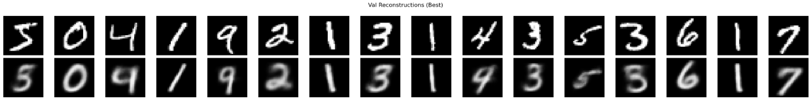
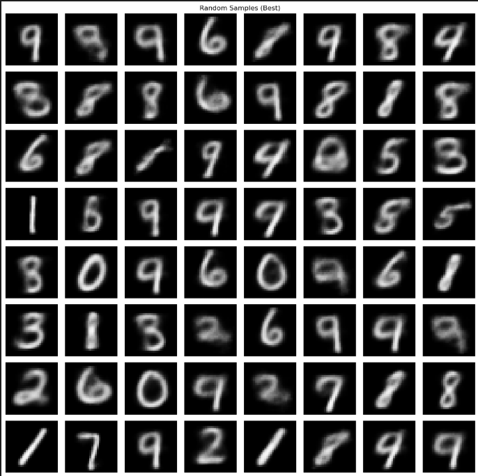
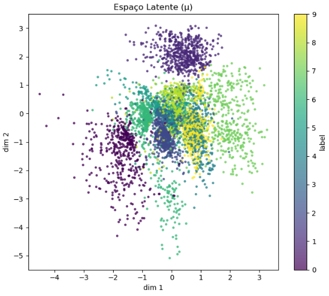

4.VAE¶
A brief description of my approach¶
Implementei um Variational Autoencoder (VAE) em TensorFlow/Keras para o MNIST, usando arquitetura MLP com LATENT_DIM = 2 e camadas ocultas [512, 256]. O pipeline usa tf.data com batch=128, 20 épocas, Adam(lr=1e-3) .
1. Dados e tf.data¶
Carrego o MNIST do Keras, normalizo para [0,1], adiciono canal e crio Dataset batched/prefetched:
def load_dataset(name="MNIST"):
(x_train, y_train), (x_test, y_test) = keras.datasets.mnist.load_data()
x_train = (x_train.astype("float32") / 255.0)[..., None]
x_test = (x_test.astype("float32") / 255.0)[..., None]
return (x_train, y_train), (x_test, y_test)
(x_train, y_train), (x_test, y_test) = load_dataset(DATASET)
n_total = x_train.shape[0]
n_val = int(n_total * VAL_SPLIT)
x_val, y_val = x_train[:n_val], y_train[:n_val]
x_train, y_train = x_train[n_val:], y_train[n_val:]
def make_ds(x, y, shuffle=True):
ds = tf.data.Dataset.from_tensor_slices((x, y))
if shuffle:
ds = ds.shuffle(buffer_size=len(x), seed=SEED, reshuffle_each_iteration=True)
ds = ds.batch(BATCH_SIZE).prefetch(tf.data.AUTOTUNE)
return ds
train_ds = make_ds(x_train, y_train, shuffle=True)
val_ds = make_ds(x_val, y_val, shuffle=False)
test_ds = make_ds(x_test, y_test, shuffle=False)
2.Encoder (Keras Model)¶
O encoder achata a imagem e produz mu e logvar via MLP:
class Encoder(keras.Model):
def __init__(self, hidden_dims=HIDDEN_DIMS, latent_dim=LATENT_DIM):
super().__init__()
self.flatten = layers.Flatten()
mlp = []
dims = [INPUT_DIM] + hidden_dims
for i in range(len(dims) - 1):
mlp += [layers.Dense(dims[i + 1], activation="relu")]
self.mlp = keras.Sequential(mlp)
self.mu = layers.Dense(latent_dim)
self.logvar = layers.Dense(latent_dim)
def call(self, x, training=False):
x = self.flatten(x)
h = self.mlp(x, training=training)
mu = self.mu(h)
logvar = self.logvar(h)
return mu, logvar
3.Reparametrização¶
Reparametrização para manter o gradiente:
def reparameterize(self, mu, logvar):
eps = tf.random.normal(shape=tf.shape(mu))
std = tf.exp(0.5 * logvar)
return mu + std * eps
4.Decoder¶
Combino BCE (reconstrução) com KL (regularização do espaço latente para normal padrão).
class Decoder(keras.Model):
def __init__(self, hidden_dims=HIDDEN_DIMS, latent_dim=LATENT_DIM, output_dim=INPUT_DIM):
super().__init__()
mlp = []
dims = [latent_dim] + hidden_dims[::-1]
for i in range(len(dims) - 1):
mlp += [layers.Dense(dims[i + 1], activation="relu")]
mlp += [layers.Dense(output_dim, activation="sigmoid")]
self.mlp = keras.Sequential(mlp)
self.reshape = layers.Reshape(INPUT_SHAPE)
def call(self, z, training=False):
x_hat_flat = self.mlp(z, training=training)
x_hat = self.reshape(x_hat_flat)
return x_hat
5. VAE com train_step/test_step customizados¶
Combino BCE de reconstrução com KL por amostra. A classe sobrescreve train_step/test_step para registrar métricas:
class VAE(keras.Model):
def __init__(self, hidden_dims=HIDDEN_DIMS, latent_dim=LATENT_DIM):
super().__init__()
self.encoder = Encoder(hidden_dims, latent_dim)
self.decoder = Decoder(hidden_dims, latent_dim)
self.total_loss_tracker = keras.metrics.Mean(name="loss")
self.recon_loss_tracker = keras.metrics.Mean(name="recon")
self.kl_loss_tracker = keras.metrics.Mean(name="kl")
def reparameterize(self, mu, logvar):
eps = tf.random.normal(shape=tf.shape(mu))
std = tf.exp(0.5 * logvar)
return mu + std * eps
def compute_loss(self, x, training=False):
mu, logvar = self.encoder(x, training=training)
z = self.reparameterize(mu, logvar)
x_hat = self.decoder(z, training=training)
bce_per_pixel = keras.losses.binary_crossentropy(x, x_hat)
bce_per_sample = tf.reduce_sum(bce_per_pixel, axis=[1, 2])
recon_loss = tf.reduce_mean(bce_per_sample)
kl_per_sample = -0.5 * tf.reduce_sum(
1.0 + logvar - tf.square(mu) - tf.exp(logvar), axis=1
)
kl_loss = tf.reduce_mean(kl_per_sample)
total = recon_loss + kl_loss
return total, recon_loss, kl_loss, x_hat, mu, logvar, z
def call(self, x, training=False):
mu, logvar = self.encoder(x, training=training)
z = self.reparameterize(mu, logvar)
x_hat = self.decoder(z, training=training)
return x_hat
def train_step(self, data):
x, _ = data
with tf.GradientTape() as tape:
total, recon, kl, _, _, _, _ = self.compute_loss(x, training=True)
grads = tape.gradient(total, self.trainable_variables)
self.optimizer.apply_gradients(zip(grads, self.trainable_variables))
self.total_loss_tracker.update_state(total)
self.recon_loss_tracker.update_state(recon)
self.kl_loss_tracker.update_state(kl)
return {"loss": self.total_loss_tracker.result(),
"recon": self.recon_loss_tracker.result(),
"kl": self.kl_loss_tracker.result()}
def test_step(self, data):
x, _ = data
total, recon, kl, _, _, _, _ = self.compute_loss(x, training=False)
self.total_loss_tracker.update_state(total)
self.recon_loss_tracker.update_state(recon)
self.kl_loss_tracker.update_state(kl)
return {"loss": self.total_loss_tracker.result(),
"recon": self.recon_loss_tracker.result(),
"kl": self.kl_loss_tracker.result()}
6. Treinamento com checkpoint do “melhor” modelo¶
Compilo com Adam, treino 20 épocas e salvo apenas os pesos com melhor val_loss:
vae = VAE()
optimizer = keras.optimizers.Adam(LR)
vae.compile(optimizer=optimizer)
_ = vae(tf.zeros((1, *INPUT_SHAPE)))
ckpt_path = "vae_best_tf.weights.h5"
checkpoint_cb = keras.callbacks.ModelCheckpoint(
ckpt_path, monitor="val_loss", save_best_only=True, save_weights_only=True
)
history = vae.fit(
train_ds,
validation_data=val_ds,
epochs=EPOCHS,
callbacks=[checkpoint_cb],
verbose=1,
)
best_vae = VAE()
best_vae.compile(optimizer=keras.optimizers.Adam(LR))
_ = best_vae(tf.zeros((1, *INPUT_SHAPE)))
best_vae.load_weights(ckpt_path)
7. Avaliação: reconstruções, amostras e espaço latente¶
Gero figuras de reconstruções (original × reconstruída), amostras aleatórias (z ~ N(0, I)) e dispersão do espaço latente pelas médias μ:
def plot_reconstructions(model, dataset, max_images=16, title="Reconstruções"):
x_batch, _ = next(iter(dataset))
x = x_batch[:max_images]
mu, logvar = model.encoder(x, training=False)
z = model.reparameterize(mu, logvar)
x_hat = model.decoder(z, training=False)
x = x.numpy()
x_hat = x_hat.numpy()
fig, axes = plt.subplots(2, max_images, figsize=(1.5*max_images, 3))
for i in range(max_images):
axes[0, i].imshow(x[i].squeeze(), cmap="gray", vmin=0, vmax=1)
axes[0, i].axis("off")
axes[1, i].imshow(x_hat[i].squeeze(), cmap="gray", vmin=0, vmax=1)
axes[1, i].axis("off")
fig.suptitle(title)
plt.tight_layout()
plt.show()
def plot_random_samples(model, n=SAMPLES_N, title="Random Samples"):
z = tf.random.normal(shape=(n, LATENT_DIM))
x_hat = model.decoder(z, training=False).numpy()
cols = int(math.sqrt(n))
rows = int(math.ceil(n / cols))
fig, axes = plt.subplots(rows, cols, figsize=(cols*1.5, rows*1.5))
axes = np.array(axes).reshape(rows, cols)
idx = 0
for r in range(rows):
for c in range(cols):
if idx < n:
axes[r, c].imshow(x_hat[idx].squeeze(), cmap="gray", vmin=0, vmax=1)
axes[r, c].axis("off")
idx += 1
fig.suptitle(title)
plt.tight_layout()
plt.show()
def plot_latent_space(model, dataset, max_points=5000):
mus, ys, seen = [], [], 0
for x_batch, y_batch in dataset:
mu, _ = model.encoder(x_batch, training=False)
mus.append(mu.numpy())
ys.append(y_batch.numpy())
seen += x_batch.shape[0]
if seen >= max_points:
break
Z = np.concatenate(mus)[:max_points]
Y = np.concatenate(ys)[:max_points]
if Z.shape[1] >= 2:
plt.figure(figsize=(7, 6))
plt.scatter(Z[:, 0], Z[:, 1], c=Y, s=6, alpha=0.7)
plt.colorbar(label="label")
plt.title("Espaço Latente (μ)")
plt.xlabel("dim 1"); plt.ylabel("dim 2")
plt.tight_layout()
plt.show()
else:
print("Latent dimension < 2; pulando latent scatter.")
plot_reconstructions(best_vae, val_ds, max_images=16, title="Val Reconstructions (Best)")
plot_random_samples(best_vae, n=SAMPLES_N, title="Random Samples (Best)")
plot_latent_space(best_vae, test_ds, max_points=5000)
Resultados¶
O modelo Variational Autoencoder (VAE) foi treinado no dataset MNIST com 20 épocas, utilizando uma arquitetura totalmente conectada (MLP) e um espaço latente bidimensional (LATENT_DIM = 2).
O objetivo foi aprender uma representação comprimida das imagens de dígitos e gerar novas amostras coerentes com os dados originais.
Durante o treinamento, observou-se a convergência estável das perdas BCE (reconstrução) e KL (regularização).
A perda de reconstrução diminuiu consistentemente, indicando que o modelo aprendeu a reproduzir bem as entradas, enquanto a divergência KL estabilizou, refletindo o aprendizado de uma distribuição latente regularizada.
Reconstruções¶
As imagens abaixo mostram os dígitos originais (linha superior) e suas respectivas reconstruções (linha inferior) feitas pelo VAE após o treinamento.

Análise:
As reconstruções são bastante fiéis aos dígitos originais. Pequenas regiões borradas aparecem em dígitos mais complexos (como 3 e 8), o que é esperado dado o uso de uma rede MLP simples e o baixo tamanho do espaço latente (2D).
Amostras Aleatórias do Espaço Latente¶
O modelo também foi avaliado em sua capacidade generativa, amostrando vetores z ~ N(0, I) e decodificando-os em imagens.

Análise:
As imagens sintetizadas são coerentes e diversas, reproduzindo diferentes dígitos com boa qualidade visual.
Alguns exemplos apresentam leve borramento — um indicativo de sobreposição de regiões no espaço latente, algo esperado com LATENT_DIM = 2.
Espaço Latente¶
A figura abaixo mostra o espaço latente aprendido, utilizando as médias μ geradas pelo encoder. Cada ponto representa uma imagem, colorido de acordo com sua classe (dígito de 0 a 9).

Análise:
O gráfico evidencia que o VAE conseguiu organizar o espaço latente de forma estruturada, separando diferentes classes em regiões distintas.
Mesmo com apenas duas dimensões, é possível observar clusters bem definidos (por exemplo, dígitos 0, 1 e 7 aparecem claramente isolados).
Desafios e Aprendizados¶
Desafios enfrentados¶
- Compatibilidade de versões entre TensorFlow, NumPy e Python 3.12 durante a instalação.
- Ajuste do espaço latente (dimensão 2): dimensões muito pequenas reduzem a qualidade das reconstruções, mas são ideais para visualização.
- Balancear as perdas BCE e KL: um valor alto de KL pode levar a amostras menos nítidas, enquanto valores baixos reduzem a diversidade gerada.
Insights obtidos¶
- Mesmo com uma arquitetura simples (MLP), o VAE é capaz de aprender distribuições latentes significativas e gerar novos exemplos realistas.
- O espaço latente 2D permite interpretabilidade visual: é possível entender como os diferentes dígitos se distribuem e se relacionam.
- A regularização KL é fundamental para que o modelo aprenda uma distribuição contínua e suave, essencial para a geração de novas amostras.
Conclusão¶
O experimento demonstra o funcionamento prático de um Variational Autoencoder, mostrando:
- Reconstrução fiel das imagens originais,
- Capacidade generativa realista,
- Organização semântica no espaço latente.